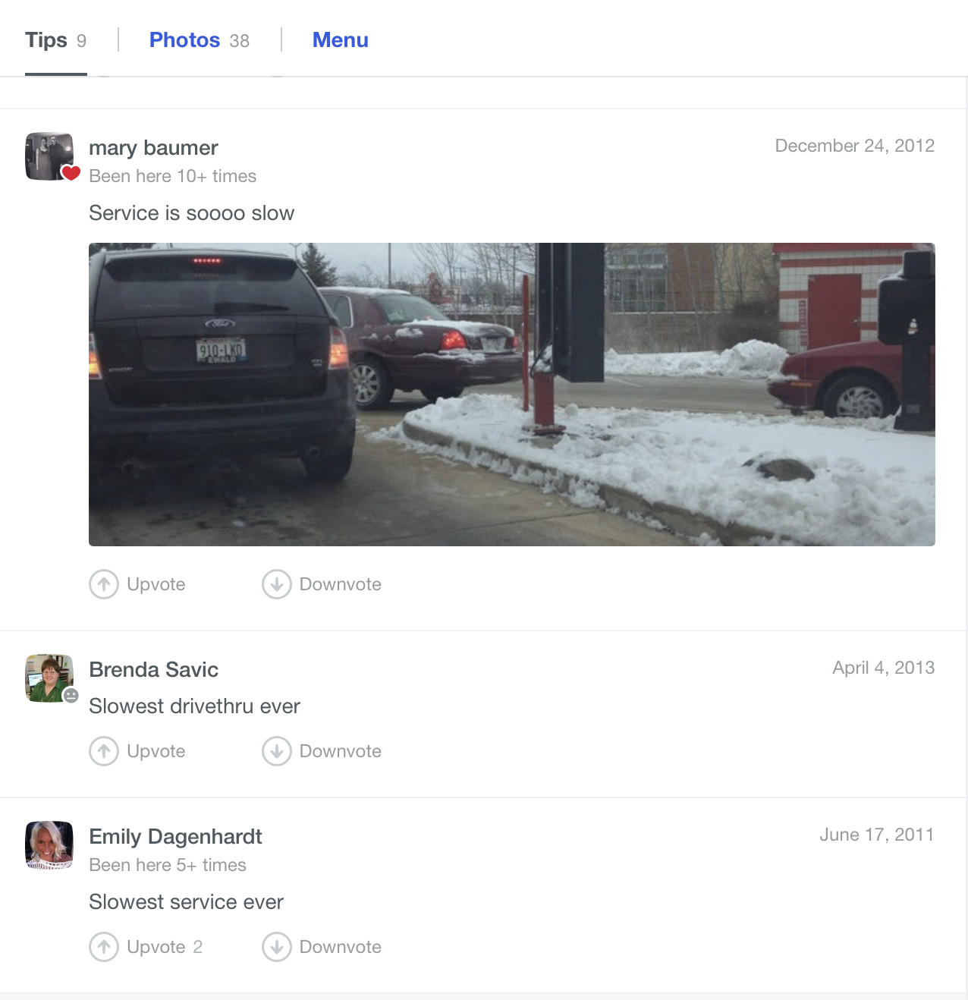
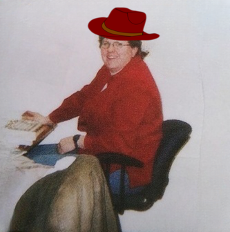

Some real B.S. memes
Play Below For Some Tunes :)

"You know, there has come a time when I just can't handle this slow drivethru! Who's working back there?? Misty D.??" -B. Savic
Rare sightings of a non-compressed Savic Foursquare image:

"Oh yeah. I remember that day. I was listening to Keeper of the Stars with my country hat on! Good times!"
